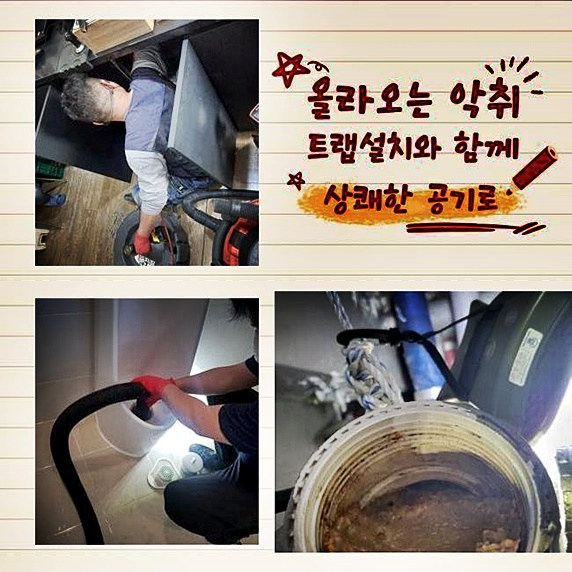
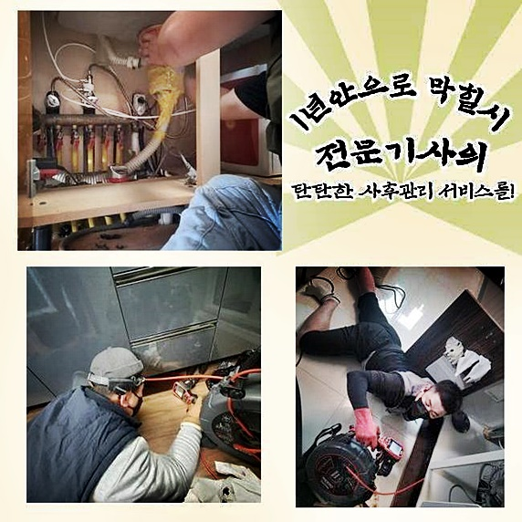
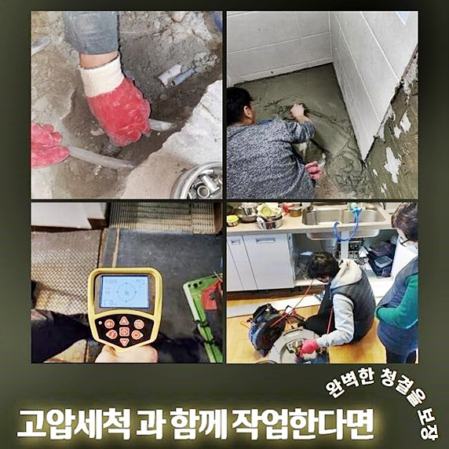
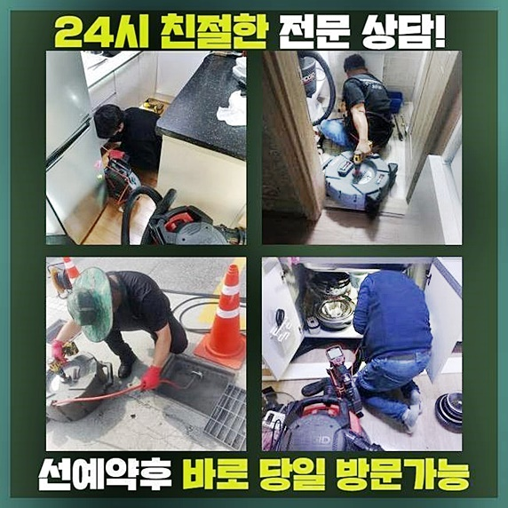
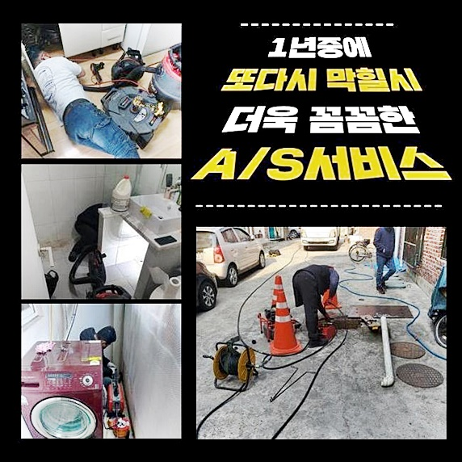
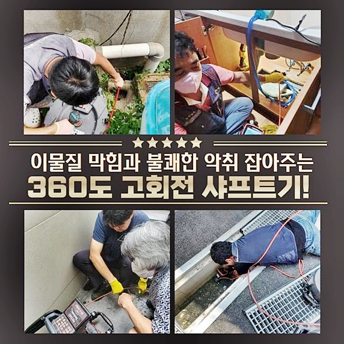
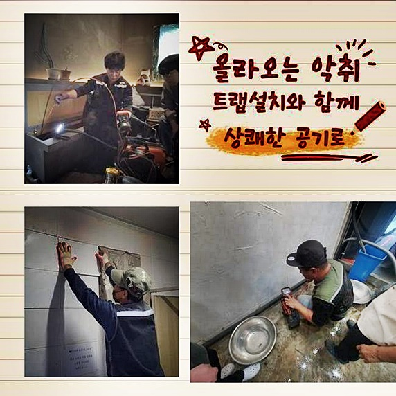

🏠 고천동욕실뚫음 청계동 횡주관청소 설비하는곳
용인시 처인구 배관막힘 전문 시공 후기

📋 작업 개요
- 위치: 용인시 처인구, 수원시 영통구, 화성시 동탄
- 서비스 유형: 배관막힘, 하수구청소, 고압세척, 내시경점검
- 작업 일시:
- 업체명: 하수구수사대 (010-5615-2118)
🔍 문제 상황
고천동욕실뚫음 청계동 횡주관청소 설비하는곳
베란다나 욕실 등 물을 상당하게 쓰게되는 집안 구역에서는 막힘에 관련된 증상도 흔히 유발되는데 그 사유를 들여다보면 신경쓰지 않고 흘려버린 노폐물이나 생활쓰레기때문에 생기는 사례가 흔하게 발견됩니다
별 일 아닌 듯 하지만 명료하게 아는 원인 때문에 직면하는 현상이지만 해결 방안 모색의 어려움은 비상히 심한 경우에 속해요
쉽게 구하는 배관클리너를 시도해보아도 실마리를 찾지 못하는 지경이라면 지체없이 베테랑의 하수구 세척을 받는게 낫습니다
셀프 뚫기로 허탕만 치시면 하수구의 간단한 막힘에만 국한되지 않고 인접한 이웃집까지 수해를 어느정도 입히는 사안까지 진화될 수 있거든요
이번에 방문한 문제 건물 역시도 위태로운 순간으로 즉시 조처가 필요했습니다
문제 지점을 체크해 보니 낡은 건물이었고 전화주신 고객분이 다양하게 매달려 봤지만 성공하지는 못했던 모양입니다
복합적이지 않은 쉬운 막힘이 생긴 측면이라면 운 좋게 뚫린다 해도 배수로를 직접 물길을 낸다는 것은 고도의 스킬이 필요합니다
이왕이면 전용 장치를 활용해서 사유를 꼬집어내고 해결책을 수립하는 것이 이 순간 이후로 일정한 통수 장애가 빚어지지 않게 차단하는 방안이라고 할 수 있죠
하수구의 트러블은 대부분 그릇된 습관으로 촉발되는데 단순해서 경시하는 태도로 바라보는 사안이 중첩되어 복잡하게 꼬이는 겁니다
장기간 두면 딱딱해지는 기름을 닦아내지 않고 하수구에 투척하거나 계란 껍질이나 뼈처럼 거대한 건더기를 그저 하수관 내부로 배출하는 태도도 문제가 돼죠

🔎 원인 분석
💡 전문가 진단: 정밀 진단 장비를 사용하여 슬러지의 고착 여부를 판명하고 타격/세척 작업을 실시했습니다.
싱크대 하부장의 근방을 관찰해 봤을 때도 역류된 물로 엉망이 되었고 코를 막게 되는 악취와 같은 이슈들이 존재했습니다!
근처만 둘러봤는데도 이용할 당시의 미숙함으로 생긴 트러블이 거의 확실하다는 합당한 추측을 이어가게 됐는데요
여러 방면의 동향을 두루 훑어보고 나서 기초 단계인 석션을 단일 사용함으로써 혹시 봉인이 풀리게 되는지 살펴보기로 결정했어요
유감스럽게도 해당 장소의 아래에 달린 하부장이 거대한 석션기가 들어가긴 여유공간이 너무 비좁아서 일단 들어내고 시공해야 했어요
얼마든지 떼도된다고 하셔서 분해해서 옆으로 두고 석션기기 작업을 시작하여 청소를 임하게 되었습니다
딱히 까다롭진 않았기에 석션을 돌리는 중에 집주인분과 해당 막힘에 관련한 세부적 디테일에 대해서도 언급할 여력이 됐습니다
이사 들어온지 많이 지나지 않았고 막힐 지경이 될 정도로 들어가서는 안될 이물질을 내려보낸일이 있을리 만무하다며 당당히 말씀하셨어요
앞서 거주하시던 분이 큰 고려없이 싱크대를 쓴게 분명하다는 점을 웬만큼 짐작할 수 있었는데 다소 답답할 순 있지만 어쩔 수는 없습니다
무슨 방법을 통하여 설비를 관리해야 나중에 유사한 막힘 증세가 빚어지지 않을지에 관계된 팁도 드렸어요
하부장이 처한 모습은 한 바가지는 흘러나온 듯한 역류가 생긴데다 지독한 악취까지 풍겼었고 날파리같은 해충이 득실대는 상황이었죠
계절도 계절이지만 공기조차 찝찝했는데 그저 흘려보냈을 상황에선 바이러스의 온상이 되는 위험천만한 시기로 진입하는 절체절명의 타이밍이었네요

🔧 작업 과정
석션기로 열심히 빨아들였지만 예상했던 만큼의 양질의 작업까진 못 됐어요
내부의 고인 물과 흡수하는 과정으로 덜어낼 수 있는 가장 미량이 아닐까 칭보아도 무방한 수준의 내부 잔해물들만 내부에서 발산됐어요
기본에서 많이 나아간 상태까지는 아니라면 석션기계로 처리하더라도 통로가 꽤 관통되곤 하는데 흡입하는 작업으론 유의미한 결과를 내지 못하는 상태라는 사실을 감지해 낼 수 있었죠
배관에 사용되게 고안된 내시경 장비를 동원하여 어느 선상이 문제고 무엇때문에 정체가 생겼나 집중 스캔에 들어갔어요
섬세한 내시경 촬영기기만 제대로 쓰더라도 오류 사항을 명확히 분석할 수 있다보니 혜택이 많다고 강조할 만 하답니다
지금 소개하고 있는 하수구 건은 심각성이 기대를 훌쩍 넘어서 하수로 통로 자체도 희뿌옇게 가려졌고 기름 덩어리나 기타 오염 물질만 수두룩하게 머물러있는 모습이 보였을 뿐입니다
이에 더 확장된 관찰은 어려울 것 같다고 판단하여 바로 회전력이 좋은 샤프트를 구동시켜서 파이프 라인을 딥클렌징 해줬는데요
이 샤프트라는 기계는 흡수 기법으로 배관 속의 문제요소를 마무리하는 단계가 아니라 원심력으로 순회하는 단단한 체인 구조로 직접 접촉을 가하는 식으로 돌아가기 때문에 눈에 띄는 개선이 됩니다
그러나 허술한 배관 컨디션에다 혹시나 스크래치 등의 손상이 미칠 때는 물샘 같은 처리하기 힘든 중증 사건이 발발할 수 있다보니 장비의 적절한 활용을 발휘해야 할 것입니다
설비의 노후화 수준이 높은 경우에 속하면 다양한 오류가 습관처럼 도래하기 때문에 가열차게 더 집중하면서 세척 과정에 임해야 할 의무가 있답니다
작업을 하면서 투출되는 기름 때와 각종 불순물이 기타 다른 배수로로 빠져서 막힘의 전이를 일으키는 경우에 이르지 않게끔 중간에 흡입 과정도 끈기 있게 수행해야 해요
마지막으로 싱크대에서 물의 배출 테스트를 시행해 봤더니 이전에 존재했던 막힘 및 역류같은 현상이 깨끗이 없어진 점을 판별하게 됐어요
개수대 물의 제거가 척척 되는 것을 확인하시곤 고객님도 장기간 골머리를 앓아온 하수구를 너무 잘 뚫어줬다고 감동하셨습니다
초기가 아니라 꽤 진행된 막힘 상황이었다면 보다 서둘러서 배관 클리닝 전문공에게 연락하셨다면 쉽게 해결됐을 테지만 그래도 중기 정도에서 요청을 해주신 것에 대하여 다행스러운 상황이었다 싶더라고요
처리 후 선보여드린 결과물에 만족하셔서 베란다 하수구 청소까지도 현장에서 맡기셨어요
미리 협의된 내용은 아니었지만 다음 현장까지는 시간이 뜨는 상태인데다 처리해야 할 작업량이 비교적 수월하게 판단돼서 흐름을 이어가서 뚫었습니다
깊은 배관 속을 체크하는 카메라를 활용해 배수로 내의 조건과 상황을 접수해 가며 합당한 장치를 선정했어요


✅ 작업 완료
샤프트 장치를 안으로 끈기 있게 돌려주니 상쾌한 하수의 이동이 달성되더라고요
베란다 쪽에 썩은 악취가 심각해서다행히 큰 난관에 부딪히지 않고도 마무리할 수 있어서 가슴을 쓸어 내렸네요
실내 중 어디라도 집안의 배수로에 관련한 적임자는 저희 막힘을 철저히 다루는 프로가 견적을 내드리는 게 무엇보다 합리적입니다
만일 각고의 노력을 기울여도 개선될 낌새가 없다면 숙련된 기술자인 저희에게 내방을 요청주시면 반드시 기대하셨던 그 이상의 개선을 제공해 드리겠습니다!
즉시 출동하여 만족도 높은 꼼꼼한 업무로 깔끔한 배관환경을 구축하는 업체라는 것을 재차 강조하면서 글을 마치도록 하겠습니다




⚠️ 하수구 배관 막힘 예방 및 관리 가이드
- ✅ 머리카락, 비닐, 물티슈 등 물에 분해되지 않는 이물질은 절대 흘려보내지 마세요.
- ✅ 기름기 많은 식기는 설거지 전 키친타올로 먼저 기름때를 닦아내세요.
- ✅ 주기적으로 배수구에 뜨거운 물을 가득 부어주어 유지방 고착을 방지하세요.
- ✅ 작업 후 1년 이내 재발 시 무상 A/S 보증 서비스를 제공합니다.
💡 핵심 정리
- 확실한 장비 작업(내시경 점검 및 샤프트 스케일링)으로 원인을 뿌리 뽑습니다.
- 작업 후 1년 이내에 동일한 부위 재발 시 100% 무상 A/S 서비스를 보장합니다.
- 서울 · 경기 · 인천 전 지역에 24시간 언제든 긴급 출동할 수 있도록 항시 대기 중입니다.
❓ 자주 묻는 질문 (FAQ)
🚨 용인시 처인구 배관막힘 문제로 고민이신가요?
정확한 원인 진단과 확실한 시공으로 재발 없는 해결을 약속드립니다.
24시간 긴급 출동 | 서울 · 경기 · 인천 전지역 | 1년 내 재발 시 무상 A/S